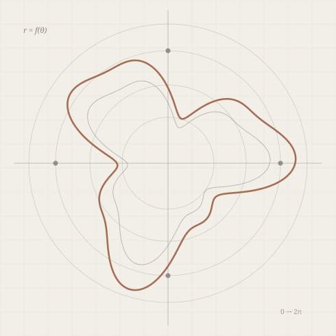
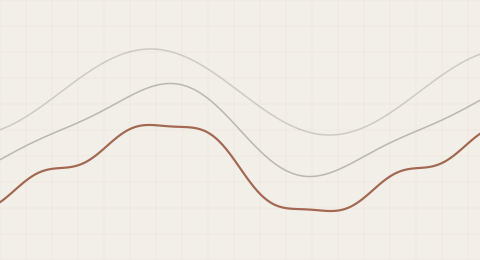
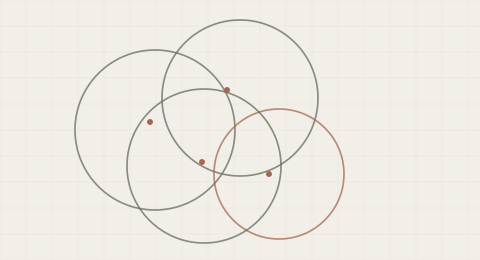
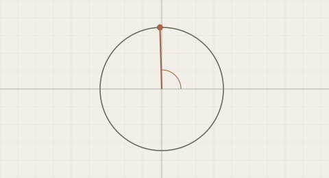
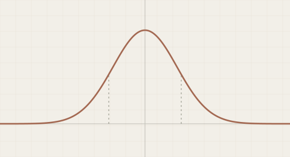

A PERSONAL MATHEMATICAL NOTEBOOK
Some ideas deserve a longer proof.
An evolving collection of mathematical essays, patient explanations, and notes from the margins of a notebook.

FIG. 01 — NOTES ON STRUCTURE∴
01 Analysis & geometry
02 Proofs & intuition
03 Mathematical notes
THE JOURNAL
Recently on paper
01 /
Hearing the Shape of a Function
How orthogonality turns an arbitrary periodic signal into a collection of simple oscillations.

02 /Why Compactness Is a Superpower
From open covers to maximum principles: the quiet power of compact spaces.

03 /A Short Route to Euler's Identity
Why exponentials can encode rotations, and how five constants fall into a single equation.

04 /The Gaussian Integral, Squared
A one-dimensional integral becomes simple when we turn it into an area calculation.

A NOTE ON THE PROCESS
Curiosity, before certainty.
Mathematics becomes memorable when the argument has room to breathe. These pages are for that slower kind of thinking.
Read the working notes ↗eiπ + 1 = 0